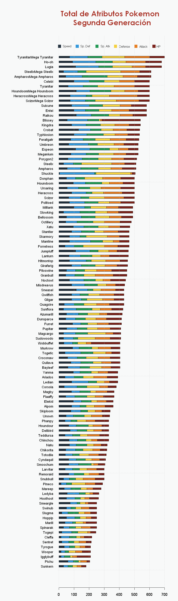

Pokemon
Pokemon¶
### Funcion para que me muestre mi gracico con un
### cierto largo y ancho
dim.plot <- function(x, y) options(repr.plot.width=x, repr.plot.height=y)
pkm <- read.csv("Data/pkm.csv")
head(pkm)
| X | X. | Name | Type.1 | Type.2 | Total | HP | Attack | Defense | Sp..Atk | Sp..Def | Speed | Generation | Legendary | |
|---|---|---|---|---|---|---|---|---|---|---|---|---|---|---|
| <int> | <int> | <chr> | <chr> | <chr> | <int> | <int> | <int> | <int> | <int> | <int> | <int> | <int> | <chr> | |
| 1 | 1 | 1 | Bulbasaur | Grass | Poison | 318 | 45 | 49 | 49 | 65 | 65 | 45 | 1 | False |
| 2 | 2 | 2 | Ivysaur | Grass | Poison | 405 | 60 | 62 | 63 | 80 | 80 | 60 | 1 | False |
| 3 | 3 | 3 | Venusaur | Grass | Poison | 525 | 80 | 82 | 83 | 100 | 100 | 80 | 1 | False |
| 4 | 4 | 3 | VenusaurMega Venusaur | Grass | Poison | 625 | 80 | 100 | 123 | 122 | 120 | 80 | 1 | False |
| 5 | 5 | 4 | Charmander | Fire | 309 | 39 | 52 | 43 | 60 | 50 | 65 | 1 | False | |
| 6 | 6 | 5 | Charmeleon | Fire | 405 | 58 | 64 | 58 | 80 | 65 | 80 | 1 | False |
## svg("Img/poke2.svg", width = 7,height = 27)
dim.plot(8, 27)
## como son 6 estadisticas vamos a tomar 6 colores
my_col <- c("#7B241C",
"#E67E22",
"#F4D03F",
"#229954",
"#3498DB",
"#212F3C")
par(mar = c(3, 13, 8, 3), bg = "#F8F9F9")
pkm2 <- pkm[ pkm$Generation == 2, c("Name","Total", "HP","Attack", "Defense", "Sp..Atk","Sp..Def","Speed") ]
pkm2 <- pkm2[order(pkm2$Total),]
barplot(pkm2$Total, horiz = T, names.arg = pkm2$Name,
axes = T, space = 1.5, col = my_col[1], cex.names = 0.9, las = 1, main = "Total de Atributos Pokemon \n Segunda Generación",
font.main = 15, cex.main = 2, col.main = "#A93226")
for ( i in 3:7) {
barplot( apply( pkm2[,i:8], 1, sum ), horiz = T, add = T, space = 1.5, col = my_col[i-2], names.arg = F )
}
barplot( pkm2$Speed, horiz = T, add = T, space = 1.5, col = my_col[6], names.arg = F )
text(c(55, 175, 308, 435, 560, 660), rep(270, 6), rev(colnames(pkm2[,3:8])), cex = 0.8)
points( c(5, 122, 253, 375, 510, 630), rep(270,6), cex = 1.8, pch = 15, col = rev(my_col), xpd=T)
grid()
# dev.off()
